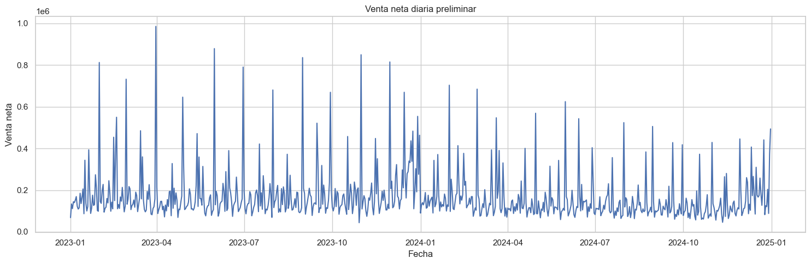

01 - Carga y revisión inicial de la base de ventas#
Este notebook tiene como objetivo realizar una primera revisión estructural de la base Ventas_1.csv, enviada para el análisis exploratorio de datos del proyecto de ventas de Olímpica.
En esta sección se revisan los siguientes aspectos:
Carga del archivo original.
Dimensiones generales de la base.
Tipos de variables.
Primeras observaciones de las columnas.
Valores nulos.
Registros duplicados.
Cardinalidad de variables principales.
Rango de fechas disponible.
Cantidad de PDV, productos, categorías y facturas.
Primeras métricas generales de venta, cantidad y descuento.
Este notebook no realiza la limpieza definitiva de la base. Su propósito es entender la estructura inicial del archivo y detectar posibles problemas que serán tratados en el siguiente notebook.
# ===============================
# Imports principales
# ===============================
from pathlib import Path
import sys
import os
import pandas as pd
import numpy as np
import matplotlib.pyplot as plt
import seaborn as sns
pd.set_option("display.max_columns", None)
pd.set_option("display.max_rows", 100)
pd.set_option("display.float_format", "{:,.2f}".format)
sns.set_theme(style="whitegrid", context="notebook")
print("Librerías cargadas correctamente.")
Librerías cargadas correctamente.
# ===============================
# Rutas del proyecto
# ===============================
PROJECT_ROOT = Path.cwd().parent
DATA_DIR = PROJECT_ROOT / "data"
RAW_DIR = DATA_DIR / "raw"
INTERIM_DIR = DATA_DIR / "interim"
PROCESSED_DIR = DATA_DIR / "processed"
REPORTS_DIR = PROJECT_ROOT / "reports"
FIGURES_DIR = REPORTS_DIR / "figures"
TABLES_DIR = REPORTS_DIR / "tables"
RAW_FILE = RAW_DIR / "Ventas_1.csv"
print("Raíz del proyecto:")
print(PROJECT_ROOT)
print("\nArchivo original:")
print(RAW_FILE)
print("\n¿Existe el archivo?")
print(RAW_FILE.exists())
Raíz del proyecto:
c:\Users\sergi\OneDrive\Desktop\Proyecto Olimpica
Archivo original:
c:\Users\sergi\OneDrive\Desktop\Proyecto Olimpica\data\raw\Ventas_1.csv
¿Existe el archivo?
True
# ===============================
# Carga de la base original
# ===============================
df = pd.read_csv(
RAW_FILE,
encoding="utf-8-sig",
dtype={
"CATEG": str,
"PLU_SAP": str,
"FACTURA": str,
"PDV": str,
"OFERTA_ID": str,
"GRUCOM": str,
"Estrato": str
},
low_memory=False
)
print("Base cargada correctamente.")
print(f"Filas: {df.shape[0]:,}")
print(f"Columnas: {df.shape[1]:,}")
Base cargada correctamente.
Filas: 409,760
Columnas: 12
# ===============================
# Primeras filas
# ===============================
df.head()
| NroReg | FECHA | PDV | Estrato | OFERTA_ID | FACTURA | CATEG | PLU_SAP | CANT | VENTA | DESCUENTO | GRUCOM | |
|---|---|---|---|---|---|---|---|---|---|---|---|---|
| 0 | 4 | 44927 | 980 | 4 | 0 | 1 | 04010 | 1280454 | 3 | 298 | 0,00 | 10 |
| 1 | 12 | 44927 | 1255 | 4 | 0 | 2 | 04010 | 1328730 | 1 | 115 | 0,00 | 10 |
| 2 | 24 | 44927 | 1255 | 4 | 0 | 3 | 04010 | 1036266 | 3 | 448 | 0,00 | 10 |
| 3 | 36 | 44927 | 1311 | 6 | 0 | 4 | 08061 | 1265857 | 1 | 82 | 0,00 | 11 |
| 4 | 37 | 44927 | 980 | 4 | 0 | 5 | 04010 | 1328946 | 4 | 519 | 0,00 | 10 |
Vista inicial de la base de datos#
La vista inicial permite observar las primeras filas del archivo original de ventas. Cada registro corresponde a una línea de venta, es decir, a un producto específico vendido dentro de una factura.
Se identifican variables asociadas a la transacción, como FECHA, PDV, FACTURA, CANT, VENTA y DESCUENTO, además de variables comerciales como CATEG, PLU_SAP, GRUCOM y OFERTA_ID.
Un aspecto importante es que la columna FECHA aparece en formato numérico serial de Excel, por lo que debe convertirse posteriormente a una fecha real. También se observa que DESCUENTO viene con coma decimal, por ejemplo 0,00, lo que indica que esta variable debe limpiarse y transformarse a formato numérico antes de realizar cálculos.
Además, la columna CATEG conserva ceros iniciales, como 04010 y 08061, por lo que debe tratarse como texto y no como número para evitar perder información del código de categoría.
En general, esta primera revisión confirma que la base está estructurada a nivel transaccional y que antes del análisis estadístico es necesario realizar una limpieza inicial de tipos de datos.
# ===============================
# Últimas filas
# ===============================
df.tail()
| NroReg | FECHA | PDV | Estrato | OFERTA_ID | FACTURA | CATEG | PLU_SAP | CANT | VENTA | DESCUENTO | GRUCOM | |
|---|---|---|---|---|---|---|---|---|---|---|---|---|
| 409755 | 8591485 | 45657 | 980 | 4 | 0 | 233742 | 04010 | 1036252 | 3 | 594 | 0,00 | 10 |
| 409756 | 8591507 | 45657 | 1255 | 4 | 225420 | 169556 | 04010 | 1026996 | 1 | 912 | 34,00 | 10 |
| 409757 | 8591516 | 45657 | 1255 | 4 | 0 | 222672 | 04010 | 1313279 | 1 | 198 | 0,00 | 10 |
| 409758 | 8591520 | 45657 | 980 | 4 | 227072 | 233879 | 04010 | 1377188 | 1 | 67 | 101,00 | 10 |
| 409759 | 8591532 | 45657 | 1255 | 4 | 0 | 209343 | 08029 | 1194777 | 0,04 | 23 | 0,00 | 11 |
Revisión de las últimas filas de la base#
La visualización de las últimas filas permite confirmar que la base mantiene la misma estructura observada al inicio: cada fila representa una línea de venta asociada a una fecha, un punto de venta, una factura y un producto específico.
En esta parte final del archivo se observa que la columna FECHA llega hasta el valor serial 45657, lo que confirma que las fechas siguen almacenadas en formato numérico de Excel y deben convertirse a formato calendario para el análisis temporal.
También se identifican registros con OFERTA_ID diferente de cero, como 225420 y 227072, lo cual indica la presencia de ofertas o promociones en algunas líneas. Además, se observa un caso donde el descuento es mayor que la venta: una línea con VENTA = 67 y DESCUENTO = 101,00. Este tipo de registro debe marcarse como caso especial, ya que genera una venta neta negativa.
Otro punto importante es que la variable CANT puede contener valores decimales con coma, como 0,04, por lo que no debe tratarse únicamente como una cantidad entera. Esto puede representar productos vendidos por peso, fracción o unidad parcial.
En general, esta salida confirma que la base contiene registros promocionales, cantidades decimales y posibles casos especiales que deben ser tratados cuidadosamente durante la limpieza y el análisis de calidad de datos.
# ===============================
# Muestra aleatoria
# ===============================
df.sample(10, random_state=42)
| NroReg | FECHA | PDV | Estrato | OFERTA_ID | FACTURA | CATEG | PLU_SAP | CANT | VENTA | DESCUENTO | GRUCOM | |
|---|---|---|---|---|---|---|---|---|---|---|---|---|
| 105080 | 2278633 | 45100 | 1311 | 6 | 176424 | 70166 | 04010 | 1027276 | 1 | 468 | 200,00 | 10 |
| 357547 | 7518308 | 45548 | 1311 | 6 | 217077 | 215180 | 04010 | 1023807 | 1 | 990 | 660,00 | 10 |
| 318578 | 6663996 | 45463 | 1311 | 6 | 0 | 200776 | 04010 | 1021969 | 1 | 91 | 0,00 | 10 |
| 303618 | 6359494 | 45434 | 1255 | 4 | 204229 | 170958 | 08042 | 1015664 | 1 | 483 | 161,00 | 11 |
| 408731 | 8579712 | 45657 | 1311 | 6 | 0 | 233722 | 04010 | 1313279 | 1 | 198 | 0,00 | 10 |
| 400372 | 8442436 | 45643 | 1311 | 6 | 0 | 230925 | 08042 | 1014797 | 1 | 744 | 0,00 | 11 |
| 205668 | 4404517 | 45266 | 980 | 4 | 0 | 136269 | 04010 | 1336391 | 2 | 140 | 0,00 | 10 |
| 79962 | 1736947 | 45058 | 1311 | 6 | 0 | 53448 | 04010 | 1036252 | 1 | 169 | 0,00 | 10 |
| 171604 | 3705358 | 45210 | 980 | 4 | 0 | 114476 | 08061 | 1008766 | 1 | 149 | 0,00 | 11 |
| 379439 | 8004400 | 45598 | 1311 | 6 | 0 | 223193 | 04010 | 1371769 | 1 | 202 | 0,00 | 10 |
Revisión de una muestra aleatoria de registros#
La muestra aleatoria permite observar registros de diferentes momentos de la base y confirmar que la estructura es consistente a lo largo del archivo. En estos registros se mantienen las mismas variables principales: fecha, punto de venta, factura, categoría, producto, cantidad, venta y descuento.
Se observa que existen ventas tanto con promoción como sin promoción. Las líneas con OFERTA_ID diferente de cero indican posibles ventas asociadas a ofertas comerciales, mientras que las líneas con OFERTA_ID = 0 corresponden a registros sin oferta identificada.
También se evidencia que los descuentos pueden variar considerablemente. Por ejemplo, hay líneas con descuentos altos frente al valor de venta, como ventas de 990 con descuento de 660,00 o ventas de 468 con descuento de 200,00. Esto refuerza la importancia de calcular variables como DESCUENTO_PCT y VENTA_NETA.
Además, la muestra incluye diferentes puntos de venta, principalmente 980, 1255 y 1311, lo que confirma que el análisis debe considerar diferencias por tienda. También aparecen distintas categorías, como 04010, 08042 y 08061, lo cual permite estudiar la composición de ventas por categoría.
En conclusión, esta muestra confirma que la base contiene una combinación de registros promocionales y no promocionales, diferentes PDV, múltiples categorías y descuentos variables, por lo que el EDA debe analizar tanto el comportamiento comercial como la calidad de los datos.
# ===============================
# Columnas de la base
# ===============================
columnas = pd.DataFrame({
"columna": df.columns,
"tipo_dato": df.dtypes.astype(str).values,
"nulos": df.isna().sum().values,
"nulos_pct": (df.isna().mean().values * 100).round(4),
"unicos": df.nunique(dropna=False).values
})
columnas
| columna | tipo_dato | nulos | nulos_pct | unicos | |
|---|---|---|---|---|---|
| 0 | NroReg | int64 | 0 | 0.00 | 409760 |
| 1 | FECHA | int64 | 0 | 0.00 | 731 |
| 2 | PDV | str | 0 | 0.00 | 3 |
| 3 | Estrato | str | 0 | 0.00 | 2 |
| 4 | OFERTA_ID | str | 0 | 0.00 | 3123 |
| 5 | FACTURA | str | 0 | 0.00 | 233889 |
| 6 | CATEG | str | 0 | 0.00 | 7 |
| 7 | PLU_SAP | str | 0 | 0.00 | 6039 |
| 8 | CANT | str | 180 | 0.04 | 242 |
| 9 | VENTA | int64 | 0 | 0.00 | 4083 |
| 10 | DESCUENTO | str | 0 | 0.00 | 1478 |
| 11 | GRUCOM | str | 0 | 0.00 | 2 |
Resumen inicial de columnas, tipos de datos y valores nulos#
La tabla resume la estructura general de la base original. Se observa que el archivo contiene 409.760 registros, ya que la columna NroReg tiene 409.760 valores únicos y no presenta valores nulos. Esto sugiere que NroReg funciona como identificador único de cada línea de venta.
La columna FECHA tiene 731 valores únicos, lo cual es consistente con una base de dos años completos de información diaria. Sin embargo, aparece como tipo int64, por lo que aún debe convertirse desde serial de Excel a formato fecha.
Las variables PDV, Estrato, CATEG y GRUCOM presentan baja cardinalidad. En particular, la base contiene 3 puntos de venta, 2 estratos, 7 categorías y 2 grupos comerciales. Estas variables son útiles para segmentar el análisis comercial.
La columna PLU_SAP tiene 6.039 productos únicos, lo que indica una alta variedad de productos. Esta alta cardinalidad debe tenerse en cuenta en análisis posteriores, especialmente si se desea modelar ventas por producto.
La columna FACTURA tiene 233.889 valores únicos, pero no necesariamente identifica de forma única un ticket, ya que una misma factura puede repetirse entre fechas o puntos de venta. Por eso se recomienda construir un identificador de ticket combinando FECHA, PDV y FACTURA.
En cuanto a valores nulos, casi todas las columnas están completas. La única columna con faltantes es CANT, con 180 valores nulos, equivalentes al 0,04% de la base. Aunque el porcentaje es bajo, estos registros deben revisarse porque la cantidad vendida es una variable clave para calcular unidades, precios unitarios y métricas comerciales.
También se observa que CANT y DESCUENTO están como texto debido al uso de coma decimal. Por esta razón, deben limpiarse y convertirse a formato numérico antes de realizar cálculos.
En general, la base tiene buena completitud, pero requiere una limpieza inicial de tipos de datos para poder realizar correctamente el EDA.
# ===============================
# Información general del DataFrame
# ===============================
df.info()
<class 'pandas.DataFrame'>
RangeIndex: 409760 entries, 0 to 409759
Data columns (total 12 columns):
# Column Non-Null Count Dtype
--- ------ -------------- -----
0 NroReg 409760 non-null int64
1 FECHA 409760 non-null int64
2 PDV 409760 non-null str
3 Estrato 409760 non-null str
4 OFERTA_ID 409760 non-null str
5 FACTURA 409760 non-null str
6 CATEG 409760 non-null str
7 PLU_SAP 409760 non-null str
8 CANT 409580 non-null str
9 VENTA 409760 non-null int64
10 DESCUENTO 409760 non-null str
11 GRUCOM 409760 non-null str
dtypes: int64(3), str(9)
memory usage: 50.3 MB
Información general del DataFrame#
La salida de df.info() confirma que la base contiene 409.760 filas y 12 columnas originales. El tamaño en memoria es de aproximadamente 50,3 MB, por lo que es una base manejable para trabajar en Python con pandas.
Se observa que la mayoría de las columnas fueron leídas como texto (str), especialmente las variables de identificación y clasificación como PDV, Estrato, OFERTA_ID, FACTURA, CATEG, PLU_SAP y GRUCOM. Esta decisión es adecuada porque estos campos representan códigos y no valores numéricos para operaciones matemáticas.
Las columnas NroReg, FECHA y VENTA aparecen como enteros (int64). Sin embargo, aunque FECHA está como número, realmente representa una fecha en formato serial de Excel, por lo que debe transformarse posteriormente a una variable tipo fecha.
La única columna con valores faltantes es CANT, con 409.580 registros no nulos de un total de 409.760, lo que indica 180 valores faltantes. Esta variable deberá limpiarse y convertirse a formato numérico, ya que actualmente está como texto debido a la presencia de cantidades decimales con coma.
También se confirma que DESCUENTO está como texto, por lo que debe convertirse a número antes de calcular variables como VENTA_NETA, DESCUENTO_PCT y precios unitarios.
En síntesis, la base tiene buena completitud general, pero requiere limpieza de tipos de datos antes del análisis estadístico: conversión de fechas, conversión de cantidades y descuentos a numérico, y conservación de códigos como texto.
# ===============================
# Dimensiones generales
# ===============================
n_filas, n_columnas = df.shape
print(f"Número de filas: {n_filas:,}")
print(f"Número de columnas: {n_columnas:,}")
print(f"Número total de celdas: {n_filas * n_columnas:,}")
Número de filas: 409,760
Número de columnas: 12
Número total de celdas: 4,917,120
Dimensiones generales de la base#
La base contiene 409.760 filas y 12 columnas, para un total de 4.917.120 celdas de información.
Este tamaño indica que se trata de una base con volumen suficiente para realizar un análisis exploratorio robusto, especialmente porque permite estudiar patrones por fecha, punto de venta, producto, categoría, factura, cantidad, venta y descuento.
El número de filas confirma que la información está a nivel de línea de venta y no a nivel de factura agregada. Es decir, una misma factura puede aparecer en varias filas si contiene varios productos comprados.
En general, el tamaño de la base es adecuado para trabajar con pandas y permite realizar análisis detallados sin requerir todavía herramientas de procesamiento distribuido.
Diccionario inicial de variables#
A partir de la estructura observada, la base contiene las siguientes variables:
Variable |
Descripción inicial |
|---|---|
|
Identificador de registro o línea de venta |
|
Fecha de la transacción en formato serial de Excel |
|
Punto de venta o tienda |
|
Estrato asociado al punto de venta |
|
Identificador de oferta o promoción |
|
Número de factura |
|
Categoría del producto |
|
Código del producto o SKU |
|
Cantidad vendida |
|
Valor bruto de la venta |
|
Valor del descuento aplicado |
|
Grupo comercial |
Una observación importante es que la base parece estar a nivel de línea de venta, no a nivel de factura completa. Es decir, una misma factura puede aparecer en varias filas si contiene varios productos.
# ===============================
# Valores nulos
# ===============================
nulos = (
df.isna()
.sum()
.reset_index()
.rename(columns={"index": "columna", 0: "nulos"})
)
nulos["nulos_pct"] = (nulos["nulos"] / len(df) * 100).round(4)
nulos = nulos.sort_values("nulos", ascending=False)
nulos
| columna | nulos | nulos_pct | |
|---|---|---|---|
| 8 | CANT | 180 | 0.04 |
| 0 | NroReg | 0 | 0.00 |
| 2 | PDV | 0 | 0.00 |
| 1 | FECHA | 0 | 0.00 |
| 3 | Estrato | 0 | 0.00 |
| 4 | OFERTA_ID | 0 | 0.00 |
| 6 | CATEG | 0 | 0.00 |
| 5 | FACTURA | 0 | 0.00 |
| 7 | PLU_SAP | 0 | 0.00 |
| 9 | VENTA | 0 | 0.00 |
| 10 | DESCUENTO | 0 | 0.00 |
| 11 | GRUCOM | 0 | 0.00 |
Revisión de valores nulos#
La revisión de valores nulos muestra que la base tiene una completitud muy alta. De las 12 columnas originales, únicamente CANT presenta valores faltantes.
La columna CANT tiene 180 valores nulos, equivalentes al 0,04% del total de registros. Aunque este porcentaje es muy bajo, la variable debe revisarse porque representa la cantidad vendida y es necesaria para calcular unidades totales, precios unitarios y métricas relacionadas con el volumen de venta.
El resto de columnas no presenta valores nulos, incluyendo variables clave como FECHA, PDV, FACTURA, CATEG, PLU_SAP, VENTA y DESCUENTO. Esto es positivo porque indica que la base tiene buena calidad inicial en términos de completitud.
En conclusión, el problema de valores faltantes es mínimo y se concentra únicamente en la variable CANT. En la etapa de limpieza estos registros deben marcarse o tratarse con cuidado, pero no representan un problema crítico para el análisis general.
# ===============================
# Columnas con valores nulos
# ===============================
nulos[nulos["nulos"] > 0]
| columna | nulos | nulos_pct | |
|---|---|---|---|
| 8 | CANT | 180 | 0.04 |
Columnas con valores faltantes#
Al filtrar únicamente las columnas con valores nulos, se confirma que CANT es la única variable con datos faltantes en la base.
Esta columna presenta 180 registros nulos, equivalentes al 0,04% del total. Aunque la proporción es baja, es importante tenerla en cuenta porque CANT representa la cantidad vendida y se utiliza para calcular unidades, precios unitarios y métricas de volumen.
Dado que el porcentaje de nulos es muy pequeño, estos casos no afectan de forma significativa el análisis general. Sin embargo, durante la limpieza se recomienda marcarlos con una bandera de calidad o excluirlos en cálculos donde la cantidad sea indispensable.
En general, la base muestra una buena completitud, ya que todas las demás columnas están completamente diligenciadas.
# ===============================
# Duplicados completos
# ===============================
duplicados_completos = df.duplicated().sum()
print(f"Filas duplicadas completas: {duplicados_completos:,}")
print(f"Porcentaje de duplicados completos: {duplicados_completos / len(df) * 100:.4f}%")
Filas duplicadas completas: 0
Porcentaje de duplicados completos: 0.0000%
Revisión de duplicados completos#
La revisión de duplicados completos muestra que la base no contiene filas repetidas exactamente iguales. El número de duplicados encontrados es 0, equivalente al 0,0000% del total de registros.
Este resultado es positivo porque indica que no hay registros duplicados de forma directa que puedan inflar artificialmente las ventas, las cantidades o los descuentos.
Sin embargo, esto no significa que no puedan existir facturas repetidas, ya que la base está a nivel de línea de venta. Una misma factura puede aparecer varias veces si contiene varios productos. Por eso, la validación de duplicados completos debe complementarse con el análisis de identificadores como NroReg, FACTURA y posteriormente TICKET_ID.
En conclusión, no es necesario eliminar filas duplicadas completas en esta etapa del análisis.
# ===============================
# Revisión de duplicados en NroReg
# ===============================
if "NroReg" in df.columns:
duplicados_nroreg = df["NroReg"].duplicated().sum()
print(f"NroReg duplicados: {duplicados_nroreg:,}")
print(f"NroReg únicos: {df['NroReg'].nunique():,}")
else:
print("La columna NroReg no existe en la base.")
NroReg duplicados: 0
NroReg únicos: 409,760
Revisión de duplicados en NroReg#
La columna NroReg no presenta valores duplicados. Se identifican 409.760 valores únicos, exactamente el mismo número de filas de la base.
Esto indica que NroReg funciona como un identificador único para cada línea de venta. Por tanto, cada registro de la base tiene un código propio y no se repite dentro del archivo.
Este resultado es positivo para el EDA, ya que permite tener trazabilidad a nivel de registro individual y confirma que no hay duplicación directa en el identificador principal de las líneas.
En conclusión, NroReg puede usarse como identificador único de línea, aunque no representa una factura completa ni un ticket de compra.
# ===============================
# Cardinalidad de variables principales
# ===============================
variables_clave = ["FECHA", "PDV", "Estrato", "OFERTA_ID", "FACTURA", "CATEG", "PLU_SAP", "GRUCOM"]
cardinalidad = []
for col in variables_clave:
if col in df.columns:
cardinalidad.append({
"variable": col,
"valores_unicos": df[col].nunique(dropna=False),
"porcentaje_sobre_filas": df[col].nunique(dropna=False) / len(df) * 100
})
cardinalidad = pd.DataFrame(cardinalidad)
cardinalidad
| variable | valores_unicos | porcentaje_sobre_filas | |
|---|---|---|---|
| 0 | FECHA | 731 | 0.18 |
| 1 | PDV | 3 | 0.00 |
| 2 | Estrato | 2 | 0.00 |
| 3 | OFERTA_ID | 3123 | 0.76 |
| 4 | FACTURA | 233889 | 57.08 |
| 5 | CATEG | 7 | 0.00 |
| 6 | PLU_SAP | 6039 | 1.47 |
| 7 | GRUCOM | 2 | 0.00 |
Cardinalidad de variables principales#
La tabla de cardinalidad muestra cuántos valores únicos tiene cada variable clave dentro de la base.
La columna FECHA presenta 731 valores únicos, lo cual indica que la base contiene información para 731 días distintos. Esto es consistente con una cobertura aproximada de dos años completos de ventas diarias.
La variable PDV tiene 3 valores únicos, por lo que el análisis se concentra en tres puntos de venta. A su vez, Estrato tiene 2 valores únicos, lo que sugiere que los PDV pertenecen a dos grupos de estrato diferentes.
La columna FACTURA presenta 233.889 valores únicos, lo que representa el 57,08% del total de filas. Esto indica que muchas facturas aparecen en más de una línea, lo cual es esperable en una base transaccional donde una factura puede contener varios productos.
La variable PLU_SAP tiene 6.039 productos únicos, evidenciando una alta variedad de productos. Esta alta cardinalidad será importante en el análisis de productos y en futuras decisiones de modelado, ya que trabajar directamente a nivel producto puede generar muchas combinaciones.
La columna CATEG tiene 7 categorías únicas, mientras que GRUCOM tiene 2 grupos comerciales. Esto permite construir análisis más agregados y estables por categoría o grupo comercial.
Finalmente, OFERTA_ID tiene 3.123 valores únicos, lo que indica una cantidad considerable de identificadores de oferta o promoción. Esta variable será relevante para analizar el comportamiento promocional de las ventas.
En conclusión, la base combina variables de baja cardinalidad, como PDV, Estrato, CATEG y GRUCOM, con variables de alta cardinalidad, como FACTURA, PLU_SAP y OFERTA_ID. Esto confirma que el EDA debe analizar tanto niveles agregados como niveles más detallados.
# ===============================
# Valores únicos en variables categóricas pequeñas
# ===============================
for col in ["PDV", "Estrato", "CATEG", "GRUCOM"]:
if col in df.columns:
print("=" * 60)
print(f"Variable: {col}")
print(df[col].value_counts(dropna=False).sort_index())
============================================================
Variable: PDV
PDV
1255 132627
1311 201432
980 75701
Name: count, dtype: int64
============================================================
Variable: Estrato
Estrato
4 208328
6 201432
Name: count, dtype: int64
============================================================
Variable: CATEG
CATEG
04010 158659
04019 397
08029 132505
08042 52788
08061 53538
08062 10997
08067 876
Name: count, dtype: int64
============================================================
Variable: GRUCOM
GRUCOM
10 159056
11 250704
Name: count, dtype: int64
Distribución de variables categóricas principales#
La distribución de frecuencias permite observar cómo se reparten los registros entre los principales grupos de la base.
En la variable PDV, el punto de venta con mayor número de líneas es el 1311, con 201.432 registros. Le sigue el PDV 1255, con 132.627 registros, y finalmente el PDV 980, con 75.701 registros. Esto muestra que la base no está balanceada por tienda, ya que el PDV 1311 concentra una proporción importante de las ventas registradas.
En la variable Estrato, se observan dos valores: 4 y 6. El estrato 4 tiene 208.328 registros, mientras que el estrato 6 tiene 201.432 registros. Además, la frecuencia del estrato 6 coincide exactamente con la cantidad de registros del PDV 1311, lo que sugiere que ese punto de venta está asociado a dicho estrato.
En cuanto a CATEG, las categorías con mayor presencia son 04010, con 158.659 registros, y 08029, con 132.505 registros. También tienen una participación relevante las categorías 08061 y 08042. En cambio, categorías como 04019 y 08067 tienen muy pocos registros, por lo que deben analizarse con cuidado porque pueden tener baja representatividad.
La variable GRUCOM presenta dos grupos comerciales. El grupo 11 concentra 250.704 registros, mientras que el grupo 10 contiene 159.056 registros. Esto indica que el grupo comercial 11 tiene mayor presencia en términos de líneas de venta.
En conclusión, la base presenta una concentración importante en ciertos PDV y categorías. Por esta razón, los análisis posteriores deben segmentarse por tienda, categoría y grupo comercial para evitar conclusiones generales que oculten diferencias relevantes entre segmentos.
# ===============================
# Conversión preliminar de fecha
# ===============================
df["FECHA_REAL_PRELIM"] = pd.to_datetime(
df["FECHA"],
unit="D",
origin="1899-12-30",
errors="coerce"
)
print("Fecha mínima:", df["FECHA_REAL_PRELIM"].min())
print("Fecha máxima:", df["FECHA_REAL_PRELIM"].max())
print("Días únicos:", df["FECHA_REAL_PRELIM"].nunique())
Fecha mínima: 2023-01-01 00:00:00
Fecha máxima: 2024-12-31 00:00:00
Días únicos: 731
Conversión preliminar de la fecha#
La conversión preliminar de la columna FECHA confirma que los valores numéricos corresponden a fechas reales en formato serial de Excel.
El periodo disponible en la base va desde el 1 de enero de 2023 hasta el 31 de diciembre de 2024, con un total de 731 días únicos.
Este resultado es muy importante porque indica que la base cubre dos años completos de información diaria. Esto permite realizar análisis temporales robustos, como comparación entre años, comportamiento mensual, patrones por día de la semana, quincenas, fines de mes y estacionalidad.
Además, tener información diaria continua es una ventaja para una futura etapa de modelado, ya que permite construir variables temporales, rezagos y medias móviles de ventas.
En conclusión, la variable FECHA fue interpretada correctamente y la base cuenta con una cobertura temporal adecuada para un análisis exploratorio completo.
# ===============================
# Revisión de fechas faltantes
# ===============================
fecha_min = df["FECHA_REAL_PRELIM"].min()
fecha_max = df["FECHA_REAL_PRELIM"].max()
rango_fechas = pd.date_range(start=fecha_min, end=fecha_max, freq="D")
fechas_observadas = pd.Series(df["FECHA_REAL_PRELIM"].dropna().unique())
fechas_faltantes = sorted(set(rango_fechas) - set(fechas_observadas))
print(f"Fecha inicial: {fecha_min.date()}")
print(f"Fecha final: {fecha_max.date()}")
print(f"Días esperados en el rango: {len(rango_fechas):,}")
print(f"Días observados: {df['FECHA_REAL_PRELIM'].nunique():,}")
print(f"Días faltantes: {len(fechas_faltantes):,}")
if len(fechas_faltantes) > 0:
print("\nPrimeras fechas faltantes:")
print(fechas_faltantes[:10])
else:
print("\nNo se encontraron fechas faltantes en el rango.")
Fecha inicial: 2023-01-01
Fecha final: 2024-12-31
Días esperados en el rango: 731
Días observados: 731
Días faltantes: 0
No se encontraron fechas faltantes en el rango.
Validación de cobertura temporal#
La validación de cobertura temporal muestra que la base inicia el 1 de enero de 2023 y finaliza el 31 de diciembre de 2024.
Dentro de ese rango se esperaban 731 días y se observaron exactamente 731 días, por lo que no existen fechas faltantes en el periodo analizado.
Este resultado es muy positivo para el EDA, ya que confirma que la base tiene continuidad diaria durante dos años completos. Esto permite realizar análisis temporales sin necesidad de imputar días ausentes ni corregir huecos en la serie.
En conclusión, la cobertura temporal de la base es completa y adecuada para estudiar patrones diarios, semanales, mensuales, anuales, quincenales y de cierre de mes.
# ===============================
# Resumen preliminar por año
# ===============================
df["ANIO_PRELIM"] = df["FECHA_REAL_PRELIM"].dt.year
resumen_anio = (
df.groupby("ANIO_PRELIM")
.agg(
filas=("NroReg", "count"),
dias=("FECHA_REAL_PRELIM", "nunique"),
pdv=("PDV", "nunique"),
productos=("PLU_SAP", "nunique"),
categorias=("CATEG", "nunique"),
facturas=("FACTURA", "nunique")
)
.reset_index()
)
resumen_anio
| ANIO_PRELIM | filas | dias | pdv | productos | categorias | facturas | |
|---|---|---|---|---|---|---|---|
| 0 | 2023 | 228150 | 365 | 3 | 5410 | 7 | 150248 |
| 1 | 2024 | 181610 | 366 | 3 | 4845 | 7 | 85270 |
Resumen preliminar por año#
El resumen por año muestra que la base contiene información para 2023 y 2024, manteniendo los 3 puntos de venta y las 7 categorías en ambos años.
En 2023 se registran 228.150 filas, mientras que en 2024 se registran 181.610 filas. Esto indica que el volumen de registros en 2024 es menor que en 2023. Esta diferencia debe analizarse posteriormente para determinar si corresponde a una caída real de ventas, cambios en la extracción de datos, menor actividad comercial o diferencias en el comportamiento de los productos.
En cuanto a cobertura temporal, 2023 tiene 365 días y 2024 tiene 366 días, lo cual es correcto porque 2024 fue año bisiesto. Esto confirma nuevamente que no hay huecos de fechas dentro del periodo analizado.
También se observa que el número de productos únicos disminuye de 5.410 productos en 2023 a 4.845 productos en 2024. Esto puede indicar cambios en el surtido, productos descontinuados, menor rotación o diferencias en la operación comercial entre ambos años.
Finalmente, las facturas únicas pasan de 150.248 en 2023 a 85.270 en 2024, una reducción importante que debe revisarse con más detalle en el análisis de tickets y comportamiento temporal.
En conclusión, aunque la cobertura de días, PDV y categorías es completa en ambos años, sí se observa una reducción relevante en filas, productos y facturas durante 2024, lo cual será un punto clave para el análisis temporal.
# ===============================
# Conversión preliminar de columnas numéricas
# ===============================
def convertir_decimal_preliminar(serie):
"""
Convierte una serie con posibles comas decimales a formato numérico.
"""
return pd.to_numeric(
serie.astype(str)
.str.replace(",", ".", regex=False)
.str.replace('"', "", regex=False)
.str.strip(),
errors="coerce"
)
df["CANT_PRELIM"] = convertir_decimal_preliminar(df["CANT"])
df["VENTA_PRELIM"] = pd.to_numeric(df["VENTA"], errors="coerce")
df["DESCUENTO_PRELIM"] = convertir_decimal_preliminar(df["DESCUENTO"])
df["VENTA_NETA_PRELIM"] = df["VENTA_PRELIM"] - df["DESCUENTO_PRELIM"]
print("Conversión preliminar finalizada.")
Conversión preliminar finalizada.
# ===============================
# Estadísticos descriptivos preliminares
# ===============================
cols_numericas_prelim = [
"CANT_PRELIM",
"VENTA_PRELIM",
"DESCUENTO_PRELIM",
"VENTA_NETA_PRELIM"
]
df[cols_numericas_prelim].describe().T
| count | mean | std | min | 25% | 50% | 75% | max | |
|---|---|---|---|---|---|---|---|---|
| CANT_PRELIM | 409,580.00 | 1.21 | 3.51 | -24.00 | 1.00 | 1.00 | 1.00 | 800.00 |
| VENTA_PRELIM | 409,760.00 | 340.35 | 807.68 | -32,896.00 | 83.00 | 178.00 | 398.00 | 195,457.00 |
| DESCUENTO_PRELIM | 409,760.00 | 39.71 | 269.24 | -862.00 | 0.00 | 0.00 | 8.00 | 80,080.00 |
| VENTA_NETA_PRELIM | 409,760.00 | 300.65 | 754.94 | -43,460.00 | 75.00 | 164.00 | 342.00 | 195,457.00 |
Estadísticos descriptivos preliminares#
Los estadísticos descriptivos permiten observar el comportamiento inicial de las variables numéricas después de una conversión preliminar.
La variable CANT_PRELIM tiene 409.580 valores válidos, lo que confirma que existen 180 registros sin cantidad. Su mediana es 1, lo que indica que la mayoría de líneas corresponden a ventas de una unidad o cantidades pequeñas. Sin embargo, se observan valores extremos, desde -24 hasta 800, por lo que existen cantidades negativas y cantidades muy altas que deben revisarse como posibles devoluciones, ajustes o registros atípicos.
La variable VENTA_PRELIM tiene un promedio de 340,35 y una mediana de 178, lo que muestra una distribución asimétrica: la media es mayor que la mediana debido a valores altos de venta. También se observa un valor mínimo negativo de -32.896 y un máximo de 195.457, lo que confirma la presencia de ventas negativas y ventas extremadamente altas.
En DESCUENTO_PRELIM, la mediana es 0, lo que indica que al menos la mitad de las líneas no tienen descuento. Sin embargo, el descuento máximo llega a 80.080 y el mínimo es -862, lo cual evidencia la existencia de descuentos extremos y algunos descuentos negativos que deben analizarse como casos especiales.
La variable VENTA_NETA_PRELIM, calculada como VENTA - DESCUENTO, presenta una media de 300,65 y una mediana de 164. También tiene valores negativos, con un mínimo de -43.460, lo que confirma que existen registros donde el descuento supera la venta o donde hay posibles devoluciones o ajustes.
En conclusión, aunque la mayoría de los registros parecen concentrarse en valores normales de cantidad, venta y descuento, existen valores negativos y extremos que deben ser marcados en la etapa de limpieza y analizados posteriormente en el notebook de calidad de datos y outliers.
# ===============================
# Casos especiales preliminares
# ===============================
casos_especiales = {
"Filas totales": len(df),
"CANT nula": df["CANT_PRELIM"].isna().sum(),
"CANT igual a 0": (df["CANT_PRELIM"] == 0).sum(),
"CANT negativa": (df["CANT_PRELIM"] < 0).sum(),
"VENTA nula": df["VENTA_PRELIM"].isna().sum(),
"VENTA igual a 0": (df["VENTA_PRELIM"] == 0).sum(),
"VENTA negativa": (df["VENTA_PRELIM"] < 0).sum(),
"DESCUENTO nulo": df["DESCUENTO_PRELIM"].isna().sum(),
"DESCUENTO igual a 0": (df["DESCUENTO_PRELIM"] == 0).sum(),
"DESCUENTO negativo": (df["DESCUENTO_PRELIM"] < 0).sum(),
"DESCUENTO mayor que VENTA": (df["DESCUENTO_PRELIM"] > df["VENTA_PRELIM"]).sum(),
"VENTA_NETA negativa": (df["VENTA_NETA_PRELIM"] < 0).sum(),
"VENTA_NETA igual a 0": (df["VENTA_NETA_PRELIM"] == 0).sum()
}
casos_especiales_df = pd.DataFrame(
casos_especiales.items(),
columns=["caso", "cantidad"]
)
casos_especiales_df["porcentaje"] = (
casos_especiales_df["cantidad"] / len(df) * 100
).round(4)
casos_especiales_df
| caso | cantidad | porcentaje | |
|---|---|---|---|
| 0 | Filas totales | 409760 | 100.00 |
| 1 | CANT nula | 180 | 0.04 |
| 2 | CANT igual a 0 | 2322 | 0.57 |
| 3 | CANT negativa | 133 | 0.03 |
| 4 | VENTA nula | 0 | 0.00 |
| 5 | VENTA igual a 0 | 3470 | 0.85 |
| 6 | VENTA negativa | 1763 | 0.43 |
| 7 | DESCUENTO nulo | 0 | 0.00 |
| 8 | DESCUENTO igual a 0 | 300755 | 73.40 |
| 9 | DESCUENTO negativo | 12 | 0.00 |
| 10 | DESCUENTO mayor que VENTA | 8799 | 2.15 |
| 11 | VENTA_NETA negativa | 8799 | 2.15 |
| 12 | VENTA_NETA igual a 0 | 4521 | 1.10 |
Revisión preliminar de casos especiales#
La tabla de casos especiales permite identificar registros que requieren revisión antes de continuar con análisis más avanzados.
En primer lugar, se confirma que la base contiene 409.760 filas. La variable CANT presenta 180 valores nulos, equivalentes al 0,04%, lo cual representa una proporción muy baja. Sin embargo, también existen 2.322 registros con cantidad igual a cero y 133 registros con cantidad negativa. Estos casos deben marcarse porque pueden corresponder a devoluciones, ajustes, productos vendidos por fracción, errores de digitación o movimientos especiales.
La variable VENTA no tiene valores nulos, pero sí presenta 3.470 registros con venta igual a cero y 1.763 registros con venta negativa. Estos registros no deben eliminarse automáticamente, ya que en contextos comerciales pueden estar asociados a devoluciones, anulaciones, notas crédito o ajustes operativos.
En cuanto a DESCUENTO, la mayoría de los registros no tienen descuento: 300.755 líneas, equivalentes al 73,40%, tienen descuento igual a cero. Esto indica que aproximadamente una cuarta parte de las líneas sí tiene algún tipo de descuento. También se identifican 12 descuentos negativos, una cantidad muy baja, pero que debe revisarse como posible ajuste o inconsistencia.
Un hallazgo importante es que existen 8.799 registros donde el descuento es mayor que la venta, equivalentes al 2,15% de la base. Estos mismos registros generan venta neta negativa, lo que confirma que deben ser tratados como casos especiales. No necesariamente son errores, pero sí requieren análisis separado.
Finalmente, se observan 4.521 registros con venta neta igual a cero, equivalentes al 1,10%. Estos casos pueden corresponder a descuentos totales, promociones especiales, devoluciones o ajustes.
En conclusión, la base tiene buena calidad general, pero contiene casos especiales relevantes relacionados con cantidades, ventas negativas, descuentos altos y ventas netas negativas. Por esta razón, en la limpieza no se deben eliminar automáticamente estos registros, sino crear banderas de calidad para analizarlos posteriormente.
# ===============================
# Métricas generales preliminares
# ===============================
venta_bruta_total = df["VENTA_PRELIM"].sum()
descuento_total = df["DESCUENTO_PRELIM"].sum()
venta_neta_total = df["VENTA_NETA_PRELIM"].sum()
unidades_totales = df["CANT_PRELIM"].sum()
resumen_general = pd.DataFrame({
"metrica": [
"Filas",
"PDV únicos",
"Productos únicos",
"Categorías únicas",
"Facturas únicas globales",
"Días únicos",
"Venta bruta total",
"Descuento total",
"Venta neta total",
"Unidades totales",
"Descuento / Venta bruta (%)"
],
"valor": [
len(df),
df["PDV"].nunique(),
df["PLU_SAP"].nunique(),
df["CATEG"].nunique(),
df["FACTURA"].nunique(),
df["FECHA_REAL_PRELIM"].nunique(),
venta_bruta_total,
descuento_total,
venta_neta_total,
unidades_totales,
descuento_total / venta_bruta_total * 100 if venta_bruta_total != 0 else np.nan
]
})
resumen_general
| metrica | valor | |
|---|---|---|
| 0 | Filas | 409,760.00 |
| 1 | PDV únicos | 3.00 |
| 2 | Productos únicos | 6,039.00 |
| 3 | Categorías únicas | 7.00 |
| 4 | Facturas únicas globales | 233,889.00 |
| 5 | Días únicos | 731.00 |
| 6 | Venta bruta total | 139,462,498.00 |
| 7 | Descuento total | 16,270,136.00 |
| 8 | Venta neta total | 123,192,362.00 |
| 9 | Unidades totales | 494,973.23 |
| 10 | Descuento / Venta bruta (%) | 11.67 |
Métricas generales preliminares#
El resumen general muestra una primera visión cuantitativa de la base. En total se tienen 409.760 filas, asociadas a 3 puntos de venta, 6.039 productos únicos, 7 categorías y 731 días de información.
La base contiene 233.889 facturas únicas globales, aunque este valor debe interpretarse con cuidado, ya que una factura puede repetirse entre fechas o puntos de venta. Por esta razón, más adelante se recomienda construir un identificador único de ticket combinando FECHA, PDV y FACTURA.
En términos comerciales, la base registra una venta bruta total de 139.462.498, un descuento total de 16.270.136 y una venta neta total de 123.192.362. Esto confirma que los descuentos tienen un peso relevante dentro de la operación.
El total de unidades vendidas es de 494.973,23, lo cual indica que la variable cantidad puede contener valores decimales, posiblemente asociados a productos vendidos por peso, fracción o medida variable.
El porcentaje global de descuento sobre la venta bruta es de 11,67%. Este valor es importante porque muestra que las promociones y descuentos no son marginales, sino que representan una parte significativa de la dinámica comercial.
# ===============================
# Identificador preliminar de ticket
# ===============================
df["TICKET_ID_PRELIM"] = (
df["FECHA_REAL_PRELIM"].dt.strftime("%Y-%m-%d") + "_" +
df["PDV"].astype(str) + "_" +
df["FACTURA"].astype(str)
)
print(f"Facturas únicas globales: {df['FACTURA'].nunique():,}")
print(f"Tickets únicos preliminares FECHA + PDV + FACTURA: {df['TICKET_ID_PRELIM'].nunique():,}")
Facturas únicas globales: 233,889
Tickets únicos preliminares FECHA + PDV + FACTURA: 276,989
Construcción preliminar del identificador de ticket#
La base contiene 233.889 facturas únicas globales si se analiza únicamente la columna FACTURA. Sin embargo, al construir un identificador más específico combinando FECHA + PDV + FACTURA, se obtienen 276.989 tickets únicos preliminares.
Esta diferencia indica que FACTURA por sí sola no es suficiente para identificar de manera única una compra. Es probable que un mismo número de factura se repita en diferentes fechas o puntos de venta.
Por esta razón, para los análisis a nivel de compra se recomienda utilizar un identificador compuesto:
TICKET_ID = FECHA + PDV + FACTURA
Este identificador permite aproximarse mejor al concepto de ticket o transacción, evitando subestimar el número real de compras registradas en la base.
En conclusión, FACTURA debe interpretarse como un número interno de factura, pero no como identificador único global. Para análisis de tickets, ticket promedio, productos por compra y líneas por factura, se debe usar TICKET_ID.
# ===============================
# Resumen preliminar por PDV
# ===============================
resumen_pdv = (
df.groupby(["PDV", "Estrato"])
.agg(
filas=("NroReg", "count"),
dias=("FECHA_REAL_PRELIM", "nunique"),
tickets=("TICKET_ID_PRELIM", "nunique"),
productos=("PLU_SAP", "nunique"),
categorias=("CATEG", "nunique"),
venta_bruta=("VENTA_PRELIM", "sum"),
descuento=("DESCUENTO_PRELIM", "sum"),
venta_neta=("VENTA_NETA_PRELIM", "sum"),
unidades=("CANT_PRELIM", "sum")
)
.reset_index()
)
resumen_pdv["participacion_venta_neta_pct"] = (
resumen_pdv["venta_neta"] / resumen_pdv["venta_neta"].sum() * 100
).round(2)
resumen_pdv["ticket_promedio_neto"] = (
resumen_pdv["venta_neta"] / resumen_pdv["tickets"]
).round(2)
resumen_pdv.sort_values("venta_neta", ascending=False)
| PDV | Estrato | filas | dias | tickets | productos | categorias | venta_bruta | descuento | venta_neta | unidades | participacion_venta_neta_pct | ticket_promedio_neto | |
|---|---|---|---|---|---|---|---|---|---|---|---|---|---|
| 1 | 1311 | 6 | 201432 | 731 | 129256 | 5142 | 7 | 80638414 | 8,777,219.00 | 71,861,195.00 | 232,738.60 | 58.33 | 555.96 |
| 0 | 1255 | 4 | 132627 | 731 | 93693 | 3736 | 7 | 38023322 | 5,281,154.00 | 32,742,168.00 | 165,580.55 | 26.58 | 349.46 |
| 2 | 980 | 4 | 75701 | 731 | 54040 | 2461 | 6 | 20800762 | 2,211,763.00 | 18,588,999.00 | 96,654.08 | 15.09 | 343.99 |
Resumen preliminar por punto de venta#
El resumen por PDV muestra que los tres puntos de venta tienen información para los 731 días del periodo analizado, lo cual indica una cobertura temporal completa por tienda.
El PDV 1311, asociado al estrato 6, es el punto de venta con mayor peso dentro de la base. Registra 201.432 filas, 129.256 tickets, 5.142 productos únicos y una venta neta de 71.861.195, lo que representa el 58,33% de la venta neta total. Además, tiene el ticket promedio neto más alto, con 555,96.
El PDV 1255, asociado al estrato 4, ocupa el segundo lugar en participación, con 132.627 filas, 93.693 tickets, 3.736 productos únicos y una venta neta de 32.742.168, equivalente al 26,58% del total. Su ticket promedio neto es de 349,46.
El PDV 980, también asociado al estrato 4, tiene menor participación relativa, con 75.701 filas, 54.040 tickets, 2.461 productos únicos y una venta neta de 18.588.999, equivalente al 15,09% del total. Su ticket promedio neto es de 343,99, muy cercano al del PDV 1255.
Este resultado evidencia que la base no está balanceada por punto de venta. El PDV 1311 domina claramente la venta neta, el número de tickets, la cantidad de productos y el ticket promedio. Por esta razón, el análisis y los futuros modelos deben considerar PDV como una variable clave, ya que cada tienda presenta un comportamiento comercial diferente.
# ===============================
# Resumen preliminar por categoría
# ===============================
resumen_categoria = (
df.groupby(["GRUCOM", "CATEG"])
.agg(
filas=("NroReg", "count"),
dias=("FECHA_REAL_PRELIM", "nunique"),
tickets=("TICKET_ID_PRELIM", "nunique"),
productos=("PLU_SAP", "nunique"),
venta_bruta=("VENTA_PRELIM", "sum"),
descuento=("DESCUENTO_PRELIM", "sum"),
venta_neta=("VENTA_NETA_PRELIM", "sum"),
unidades=("CANT_PRELIM", "sum")
)
.reset_index()
)
resumen_categoria["participacion_venta_neta_pct"] = (
resumen_categoria["venta_neta"] / resumen_categoria["venta_neta"].sum() * 100
).round(2)
resumen_categoria.sort_values("venta_neta", ascending=False)
| GRUCOM | CATEG | filas | dias | tickets | productos | venta_bruta | descuento | venta_neta | unidades | participacion_venta_neta_pct | |
|---|---|---|---|---|---|---|---|---|---|---|---|
| 0 | 10 | 04010 | 158659 | 731 | 121604 | 1173 | 61096386 | 7,317,028.00 | 53,779,358.00 | 244,163.00 | 43.65 |
| 3 | 11 | 08042 | 52788 | 731 | 41127 | 1748 | 29985976 | 2,868,994.00 | 27,116,982.00 | 60,593.26 | 22.01 |
| 2 | 11 | 08029 | 132505 | 731 | 95594 | 1391 | 29011472 | 3,044,652.00 | 25,966,820.00 | 123,061.92 | 21.08 |
| 4 | 11 | 08061 | 53538 | 731 | 42098 | 804 | 10970778 | 816,908.00 | 10,153,870.00 | 54,349.08 | 8.24 |
| 5 | 11 | 08062 | 10997 | 723 | 8608 | 666 | 7667928 | 2,222,411.00 | 5,445,517.00 | 10,972.18 | 4.42 |
| 6 | 11 | 08067 | 876 | 304 | 355 | 255 | 698356 | 143.00 | 698,213.00 | 1,373.79 | 0.57 |
| 1 | 10 | 04019 | 397 | 288 | 392 | 2 | 31602 | 0.00 | 31,602.00 | 460.00 | 0.03 |
Resumen preliminar por categoría#
El resumen por categoría muestra que la venta neta está concentrada principalmente en pocas categorías. La categoría 04010, perteneciente al grupo comercial 10, es la más importante de la base, con 158.659 filas, 121.604 tickets, 1.173 productos y una venta neta de 53.779.358, lo que representa el 43,65% de la venta neta total.
En segundo lugar aparece la categoría 08042, del grupo comercial 11, con una venta neta de 27.116.982 y una participación del 22,01%. Aunque tiene menos filas que la categoría 08029, presenta mayor venta neta, lo que puede indicar productos de mayor valor promedio.
La categoría 08029 también tiene un peso importante, con 132.505 filas, 95.594 tickets, 1.391 productos y una venta neta de 25.966.820, equivalente al 21,08% del total. Junto con 04010 y 08042, estas tres categorías concentran aproximadamente el 86,74% de la venta neta.
Las categorías 08061 y 08062 tienen una participación intermedia, con 8,24% y 4,42% respectivamente. Por otro lado, las categorías 08067 y 04019 tienen una participación muy baja en la venta neta, con 0,57% y 0,03%, por lo que deben interpretarse con cuidado en análisis comparativos.
También se observa que no todas las categorías tienen presencia en los 731 días. Por ejemplo, 08062 aparece en 723 días, 08067 en 304 días y 04019 en 288 días, lo cual indica menor continuidad temporal.
En conclusión, la base está fuertemente concentrada en pocas categorías, especialmente en 04010, 08042 y 08029. Para análisis posteriores y futuros modelos, la categoría será una variable clave porque explica diferencias importantes en volumen, valor de venta, frecuencia y composición comercial.
# ===============================
# Top 20 productos por venta neta
# ===============================
top_productos_venta = (
df.groupby("PLU_SAP")
.agg(
filas=("NroReg", "count"),
dias=("FECHA_REAL_PRELIM", "nunique"),
pdv=("PDV", "nunique"),
categorias=("CATEG", "nunique"),
tickets=("TICKET_ID_PRELIM", "nunique"),
venta_neta=("VENTA_NETA_PRELIM", "sum"),
unidades=("CANT_PRELIM", "sum")
)
.reset_index()
.sort_values("venta_neta", ascending=False)
.head(20)
)
top_productos_venta
| PLU_SAP | filas | dias | pdv | categorias | tickets | venta_neta | unidades | |
|---|---|---|---|---|---|---|---|---|
| 1513 | 1036246 | 7872 | 719 | 3 | 1 | 7675 | 1,958,957.00 | 10,799.00 |
| 1518 | 1036266 | 4699 | 697 | 3 | 1 | 4397 | 1,627,878.00 | 14,374.00 |
| 4657 | 1331944 | 2142 | 569 | 3 | 1 | 2117 | 1,369,148.00 | 3,143.00 |
| 4936 | 1338873 | 8419 | 701 | 3 | 1 | 8064 | 1,311,741.00 | 13,508.00 |
| 3166 | 1246431 | 842 | 79 | 3 | 1 | 627 | 1,263,074.00 | 1,606.00 |
| 1515 | 1036252 | 5075 | 708 | 3 | 1 | 4735 | 1,225,589.00 | 8,419.00 |
| 1516 | 1036253 | 2824 | 633 | 3 | 1 | 2682 | 1,208,016.00 | 14,342.00 |
| 4155 | 1313279 | 4665 | 695 | 3 | 1 | 4299 | 1,082,770.00 | 6,971.00 |
| 1324 | 1023807 | 663 | 345 | 3 | 1 | 615 | 995,053.00 | 771.00 |
| 1556 | 1041245 | 803 | 410 | 3 | 1 | 793 | 894,911.00 | 2,724.00 |
| 1367 | 1025905 | 681 | 349 | 3 | 1 | 618 | 893,962.00 | 768.00 |
| 1216 | 1019790 | 59 | 36 | 1 | 1 | 48 | 842,235.00 | 220.00 |
| 3764 | 1287167 | 158 | 106 | 3 | 1 | 154 | 820,891.00 | 184.00 |
| 1557 | 1041246 | 1713 | 624 | 3 | 1 | 1704 | 746,496.00 | 3,995.00 |
| 3765 | 1287168 | 396 | 210 | 3 | 1 | 373 | 729,317.00 | 511.00 |
| 2117 | 1143697 | 362 | 232 | 3 | 1 | 349 | 651,446.00 | 409.00 |
| 1467 | 1032080 | 370 | 232 | 3 | 1 | 347 | 645,199.00 | 421.00 |
| 1473 | 1032797 | 258 | 185 | 3 | 1 | 247 | 591,137.00 | 326.00 |
| 3667 | 1281459 | 362 | 37 | 3 | 1 | 257 | 526,727.00 | 698.00 |
| 5057 | 1342490 | 1946 | 576 | 3 | 1 | 1881 | 523,385.00 | 3,012.00 |
Top productos por venta neta#
La tabla muestra los 20 productos con mayor venta neta dentro de la base, identificados mediante el código PLU_SAP. Debido a que la base no contiene nombres descriptivos de productos, la interpretación se realiza a partir de estos códigos.
El producto con mayor venta neta es el PLU_SAP 1036246, con una venta neta de 1.958.957, presente en 7.675 tickets, durante 719 días y en los 3 PDV. Esto indica que es un producto de alta relevancia comercial, con alta frecuencia y presencia casi continua en el periodo analizado.
También se destacan productos como 1036266, 1331944, 1338873, 1246431, 1036252 y 1036253, todos con ventas netas superiores a un millón. Varios de estos productos aparecen en los 3 puntos de venta, lo que sugiere que tienen distribución amplia dentro de la operación.
Un aspecto importante es que algunos productos combinan alta venta neta con muchos tickets y unidades, como 1036246, 1036266 y 1338873. Estos productos parecen ser de alta rotación o alta relevancia en la canasta de compra.
También se observan productos con alta venta neta pero menor número de filas o tickets, como 1019790, que aparece en solo 48 tickets y un solo PDV, pero alcanza una venta neta de 842.235. Este tipo de producto puede corresponder a artículos de mayor valor unitario o ventas menos frecuentes pero de alto monto.
# ===============================
# Serie diaria preliminar de venta neta
# ===============================
ventas_diarias = (
df.groupby("FECHA_REAL_PRELIM")
.agg(
venta_neta=("VENTA_NETA_PRELIM", "sum"),
venta_bruta=("VENTA_PRELIM", "sum"),
descuento=("DESCUENTO_PRELIM", "sum"),
unidades=("CANT_PRELIM", "sum"),
tickets=("TICKET_ID_PRELIM", "nunique")
)
.reset_index()
)
plt.figure(figsize=(15, 5))
sns.lineplot(data=ventas_diarias, x="FECHA_REAL_PRELIM", y="venta_neta")
plt.title("Venta neta diaria preliminar")
plt.xlabel("Fecha")
plt.ylabel("Venta neta")
plt.tight_layout()
plt.show()

# ===============================
# Exportar tablas resumen iniciales
# ===============================
output_file = TABLES_DIR / "01_revision_inicial.xlsx"
with pd.ExcelWriter(output_file, engine="openpyxl") as writer:
columnas.to_excel(writer, sheet_name="columnas", index=False)
nulos.to_excel(writer, sheet_name="nulos", index=False)
cardinalidad.to_excel(writer, sheet_name="cardinalidad", index=False)
resumen_general.to_excel(writer, sheet_name="resumen_general", index=False)
casos_especiales_df.to_excel(writer, sheet_name="casos_especiales", index=False)
resumen_anio.to_excel(writer, sheet_name="resumen_anio", index=False)
resumen_pdv.to_excel(writer, sheet_name="resumen_pdv", index=False)
resumen_categoria.to_excel(writer, sheet_name="resumen_categoria", index=False)
top_productos_venta.to_excel(writer, sheet_name="top_productos", index=False)
print(f"Archivo exportado correctamente en: {output_file}")
Archivo exportado correctamente en: c:\Users\sergi\OneDrive\Desktop\Proyecto Olimpica\reports\tables\01_revision_inicial.xlsx
Serie diaria preliminar de venta neta#
La gráfica muestra la evolución diaria de la VENTA_NETA durante el periodo comprendido entre enero de 2023 y diciembre de 2024.
En general, se observa una serie con alta variabilidad diaria. La mayoría de los días se concentran en niveles relativamente estables de venta neta, pero existen picos marcados en diferentes momentos del periodo. Estos picos pueden estar asociados a cierres de mes, promociones, días comerciales especiales, compras atípicas o registros de alto valor.
Durante 2023 se evidencian varios picos importantes, especialmente en los primeros meses y hacia el segundo semestre. En 2024 también aparecen picos, aunque visualmente parecen menos extremos o menos frecuentes que algunos observados en 2023. Esto coincide con los resúmenes previos, donde 2024 mostraba menor volumen de registros y ventas frente a 2023.
También se aprecia un aumento fuerte hacia finales de 2023 e inicios de 2024, lo cual puede indicar un comportamiento estacional, campañas comerciales o mayor actividad en fechas cercanas a cierre de año.
En conclusión, la venta neta diaria no es completamente uniforme y presenta días atípicos que deben analizarse con mayor detalle. Para interpretar mejor la tendencia general, es recomendable complementar esta gráfica con promedios móviles de 7 y 30 días, además de análisis por mes, día de semana, quincena y fin de mes.
Conclusiones de la revisión inicial#
A partir de la carga y revisión inicial de la base, se identifican varios puntos importantes:
La base corresponde a información transaccional a nivel de línea de venta. Esto significa que cada fila representa un producto vendido dentro de una factura, no una factura completa.
La columna
FECHAse encuentra en formato serial de Excel, por lo que debe convertirse a fecha real para cualquier análisis temporal.Algunas variables que deberían ser numéricas, como
CANTyDESCUENTO, requieren tratamiento especial debido al uso de coma decimal.La columna
CATEGdebe manejarse como texto para conservar posibles ceros iniciales en los códigos de categoría.La variable
FACTURAno debe usarse sola como identificador único de ticket. Es más recomendable construir un identificador combinando fecha, PDV y factura.Existen casos especiales que deben analizarse con más detalle, como ventas negativas, cantidades negativas, ventas en cero, descuentos negativos y descuentos mayores que la venta.
La variable más importante para el análisis posterior será
VENTA_NETA, calculada como la diferencia entreVENTAyDESCUENTO.La base contiene información suficiente para realizar análisis por fecha, PDV, categoría, producto, ticket y promoción.